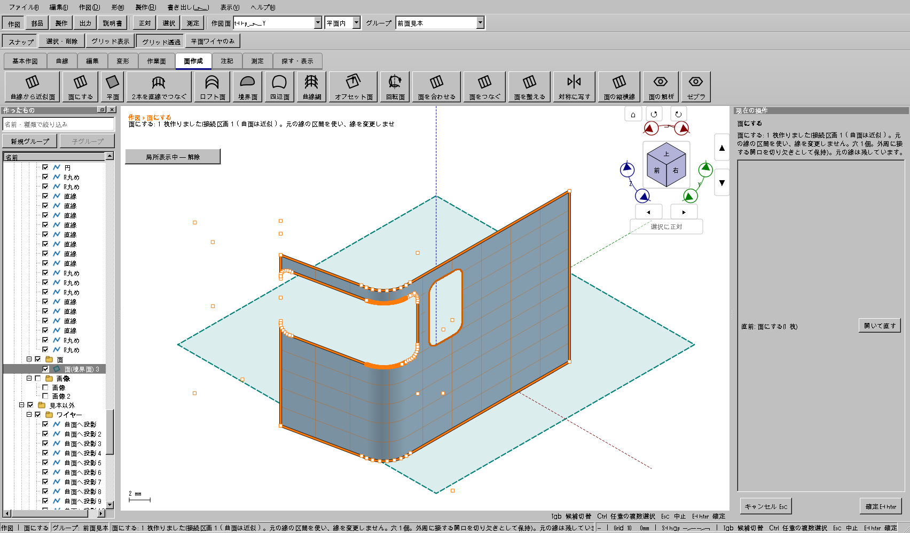
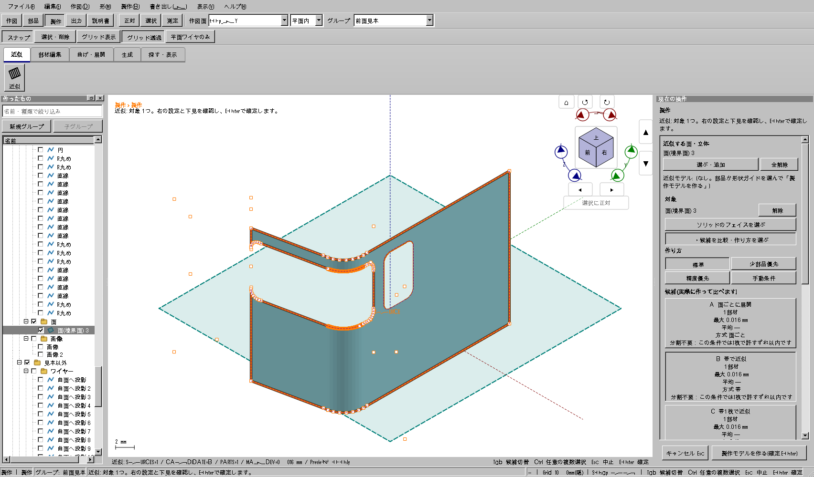
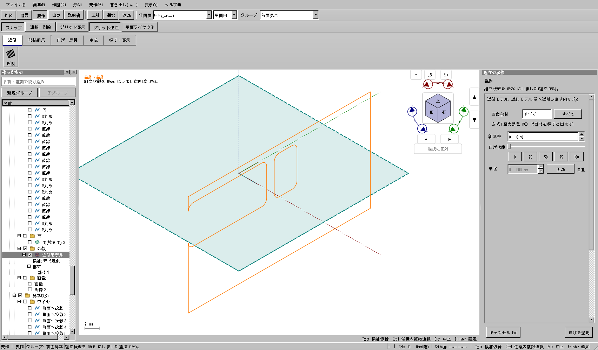
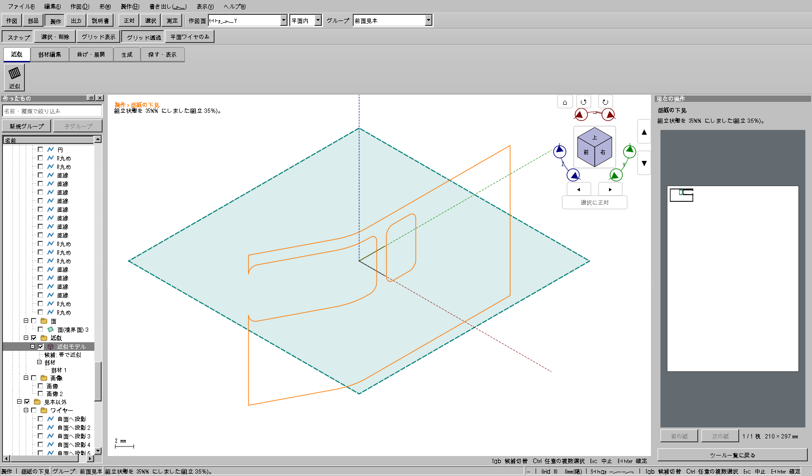
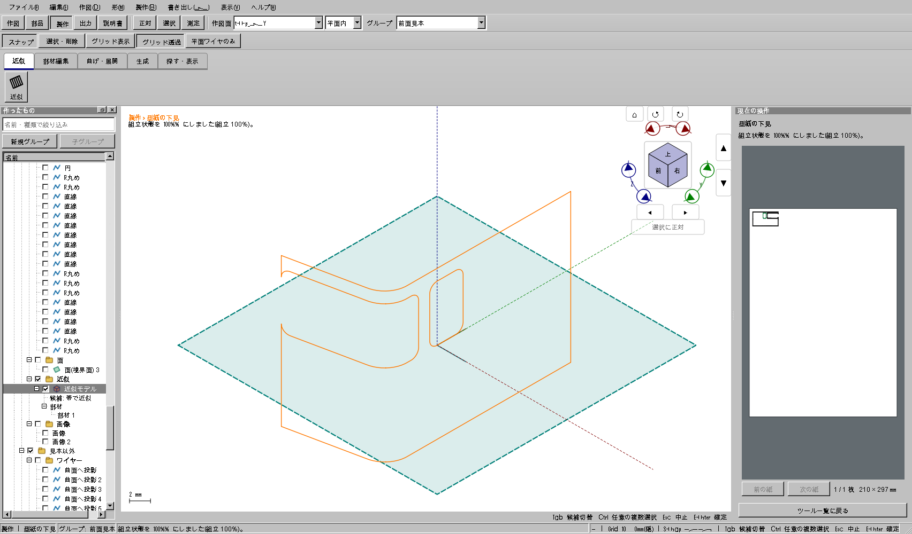
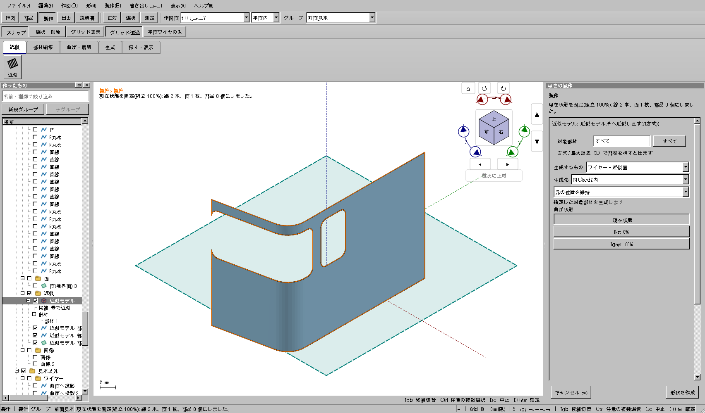
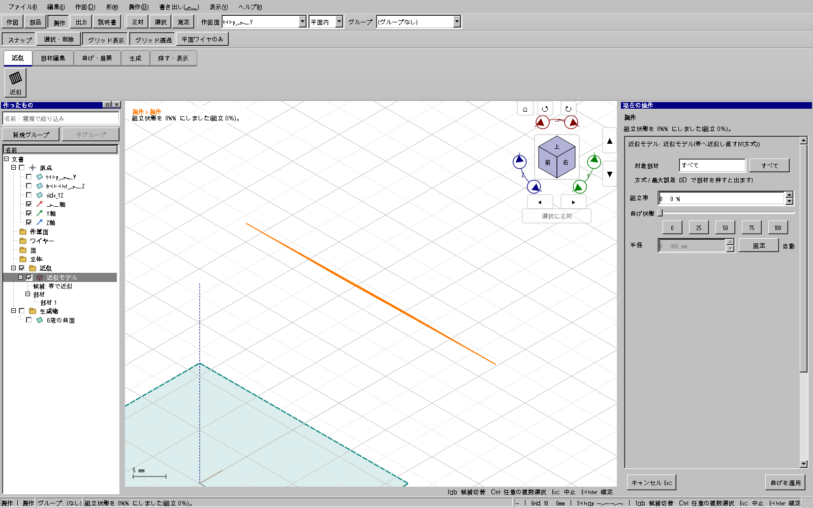
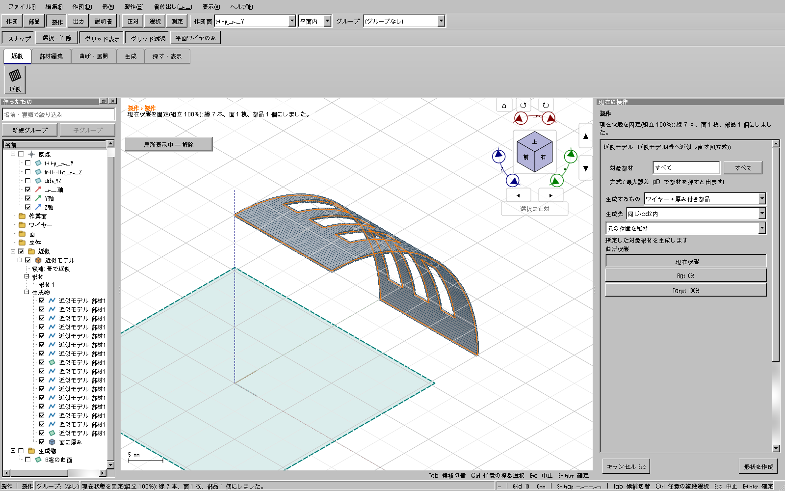

説明書 ／ 外周と窓から面を作る ／ 正面・側面から窓を投影する
回り込む窓を持つ車体を、窓が抜けたまま1枚の部材に近似し、平らな型紙へ展開します。展開後も窓の位置関係と切断経路の長さを保ちます。最後に普通のワイヤー、面、厚み付き部品を生成できます。
「1枚」は元の各フェイスの、つながった材料領域ごとの指定です。複数フェイスを選べば、それぞれの部材になります。離れた材料を橋でつないだり、複数フェイス全体を勝手に1枚へ結合したりはしません。
窓が外周まで達すると、閉じた穴ではなくコの字などの切り欠きになります。この例は左へ開いたパノラミック窓と、隣の閉じた窓穴を含む115投影の面です。外周を広げる必要はありません。

「許すずれ」は元形状との近似の目標です。枚数を1にして目標を超えた場合、元形状の精度が達成されたことにはなりません。数値を確認して枚数・方向を変えてください。許容値が自動で増えることはありません。

取消（Esc）では下見を消し、対象は名前と3Dの札を表示したまま保持します。「近似を始める」またはEnterで再計算し、下見を確認してからもう一度Enterで確定します。対象の面を押すと追加・解除できます。確定後に枚数などを変えた場合も、開始ボタンから新しい下見へ進めます。

同じ欄で35%、100%を入力して適用します。35%は途中の曲げ、100%は近似した完成形です。外周と窓の切断経路は、どの状態でも同じ長さです。100%は元の曲面そのものではなく、表示された偏差内の近似形状です。


型紙が必要なら、近似モデルを選んで「型紙を作る」を実行します。元面の外周、閉じた窓穴、外周へ開いた切り欠きを同じ部材へ反映します。
編集用の形が必要なら「生成」を開き、「生成するもの」を「ワイヤー＋近似面」、「生成先」を「同じkcd2内」、位置を「元の位置を維持」にして「形状を作成」を押します。0%で生成すれば平らな面、100%なら曲がった近似面です。外周と穴はそれぞれ1本のワイヤーとして残ります。

穴の数が増えても手順は同じです。元の面へ必要な穴をすべて作ってから、その面を近似します。下図の試験例は円筒面に6つの窓がある1枚の部材で、展開と厚み付け後も6つすべてが穴として残ります。


部材の分割・統合や元形状を変更した後は、型紙をもう一度作ってください。古い型紙の表示と書き出しは失効します。生成プレビューの取消、表示切替、組立率だけの変更では、同じ切断形状の型紙を保持します。別ファイルの読込に成功した場合は、そのファイルで型紙を作り直します。
| 状態 | 確認と対応 |
|---|---|
| 窓が埋まって見える | 元の面が重なっていないか確認します。生成結果を局所表示してください。 |
| 部材数が多い | 選んだ元フェイスが複数か、材料が離れているかを確認します。「1枚」のボタンは各フェイスへの指定です。 |
| 許すずれを超える | 元の面を保ったまま、分割方向や枚数を変えます。1枚のままで精度も達成したとは扱いません。 |
| 厚みで止まる | 状態欄の理由を確認します。鋭い折れ、非多様体、自己交差、許容内で接合できないねじれは拒否します。厚みや分割を見直してください。 |
| すでに穴がある面へ、追加の穴の役割を付けたい | 先に元の面へ必要な穴をすべて作り、その面を近似します。この版ではネイティブ穴付き面への別役割の追加開口を重ねません。 |
画像はWindowsの実Qtウィジェットを操作して取得したアプリ画面です。元の確認用モデルの準備と選択投入には文書・選択APIも使っています。OSマウス操作の全経路を試した画像ではありません。最大偏差とRMSは標本評価です。実際の印刷寸法、材料の弾性、3Dプリントの組付けは別途確認してください。